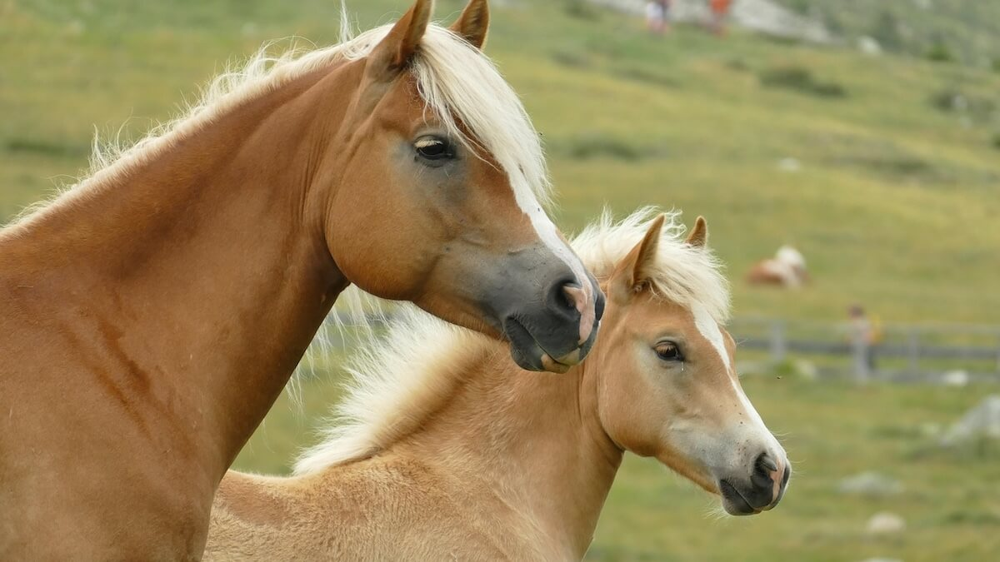

The Exmoor pony is the oldest of the British native pony breeds that have roamed the open moors of south England, for centuries. They are believed to be descendants of the horses that walked into Britain before it was even an island. Two features unique to this breed are the hooded upper brows to protect them from rain and wind, as well as the snow...
